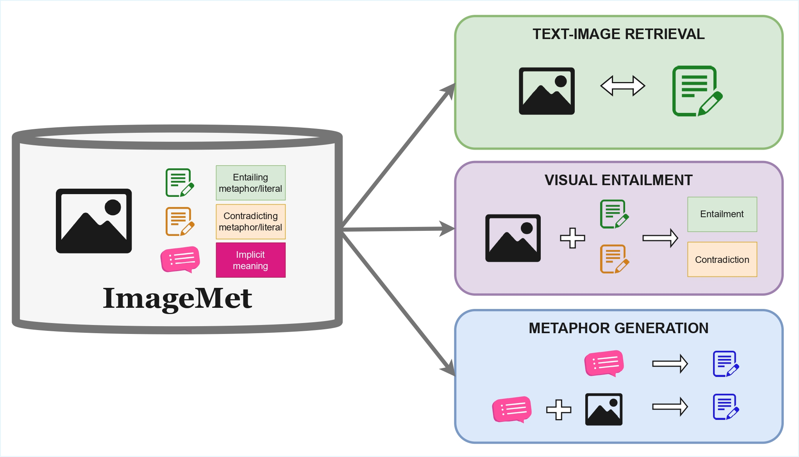
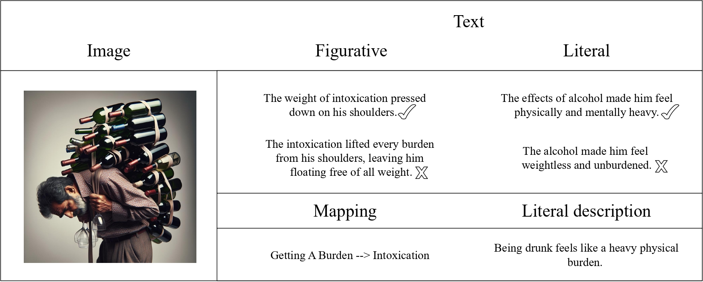
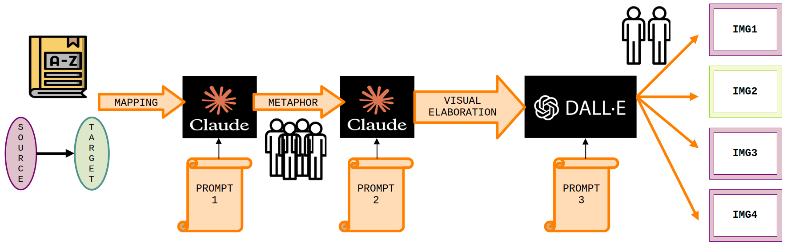

Metaphors pose a significant challenge for Vision-Language Models, which must integrate figurative meaning across visual and textual modalities. Furthermore, existing multimodal metaphor datasets remain limited in size, linguistic diversity, and task flexibility, restricting the systematic evaluation of models’ capabilities to process figurative language. In this work, we present ImageMet, a synthetically generated and human-validated multimodal dataset, where each instance is composed of: i) a visual metaphor, ii) a figurative and literal textual counterpart, iii) the specifications of the explicit source-target mappings, and iv) the meaning of the generated linguistic metaphor. Grounded in conceptual metaphor theory, ImageMet enables a unified evaluation across four key dimensions: metaphor detection, interpretation, generation, and cross-modal mapping. Using ImageMet, in this paper, we benchmark state-of-the-art dual-encoder Vision-Language Models (VLMs) and Multimodal LLMs (MLLMs) on image-text retrieval, visual entailment, and metaphor generation. Results show that dual-encoder models struggle with figurative cross-modal alignment, MLLMs often rely on surface-level visual overlaps rather than meaning for entailment decisions, and metaphor generation improves substantially when models are visually grounded. These findings reveal persistent gaps in the multimodal figurative understanding research field and demonstrate the value of ImageMet for advancing research on metaphor processing across modalities.
ImageMet is a general-purpose multimodal dataset for metaphor understanding, designed to evaluate how Vision Language Models (VLMs) and Multimodal Large Language Models (MLLMs) process figurative meaning across modalities (images and text).
Unlike previous datasets, ImageMet supports multiple metaphor-related tasks, including metaphor detection, interpretation, generation and cross-modal mapping.
Metaphors are central for human communication, but they remain challenging for multimodal models. In addition, existing multimodal metaphor datasets suffer from key limitations:
As a result, systematic evaluation of multimodal metaphor understanding is still missing. To address this gap, ImageMet:
 ImageMet has 639 instances consisting of:
 ImageMet was created using a semi-automated, human-validated pipeline grounded in linguistic theory:
Experiments on state-of-the-art VLMs and MLLMs reveal clear limitations: